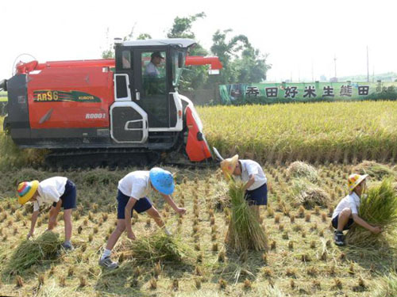

Koshihikari Harvest Day at the school paddy
校內水稻生態田 ─ 秋收
Our autumn season of Koshihikari rice came home. With the local rice mill on hand, our children walked into the paddy with banners, sickles, and the kind of focused quiet only a real task brings. By afternoon, the harvest was loaded into the Kubota and on its way to the mill.
秋季的越光米回家了。在地碾米廠的師傅在現場，孩子帶著手作橫幅與鐮刀走進稻田——那種專注的安靜，只有真正在做一件事的時候才會出現。下午，稻穀已經上了 Kubota，送往碾米廠。